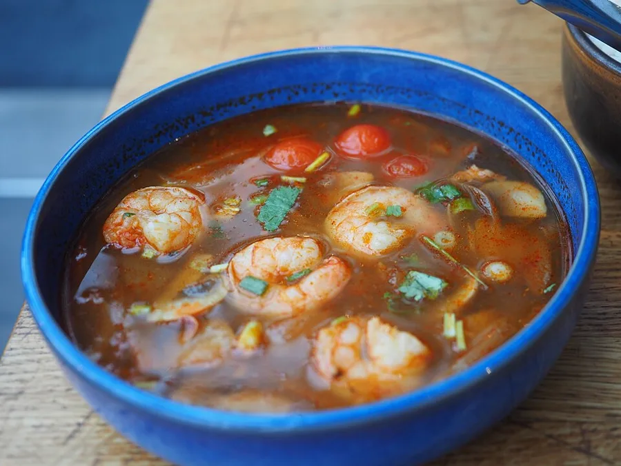

สูตรจากไทยและทั่วโลก
วันนี้กินอะไรดี?
เลือกมื้อที่อยากกินจากสูตรทำเองที่บ้าน เริ่มจากเมนูสุขภาพ พร้อมวัตถุดิบ วิธีทำ และเรื่องราวของแต่ละจาน

ต้มยำกุ้งน้ำใส อาหารไทยค้นหาเมนู
ลองพิมพ์วัตถุดิบที่มีอยู่ หรือเลือกวิธีทำที่อยากลอง
ของที่มีในครัว
เลือกวัตถุดิบที่มี เพื่อเรียงสูตรที่ใช้ของเหล่านั้นก่อน
แผนมื้อประจำสัปดาห์
เลือก “เพิ่มลงแผนมื้อ” จากหน้าสูตร แผนจะเก็บในเบราว์เซอร์นี้
รายการซื้อของ
รวมตามมื้อและจำนวนที่ในสัปดาห์ที่เลือก ติ๊กของที่มีแล้วได้